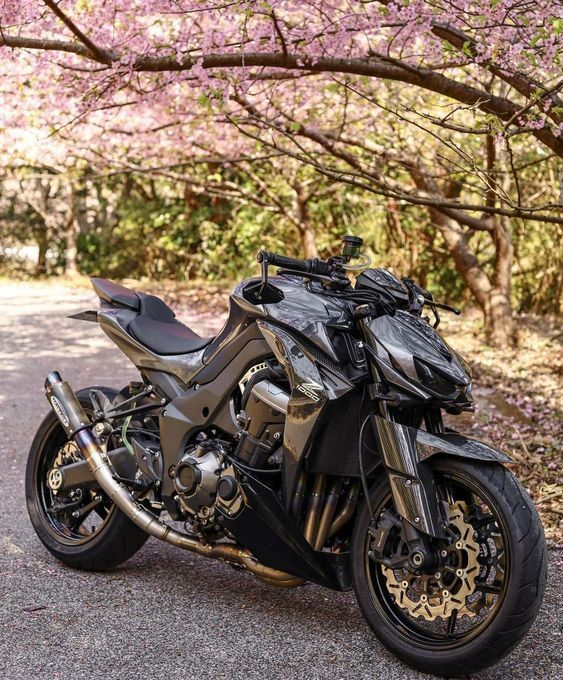
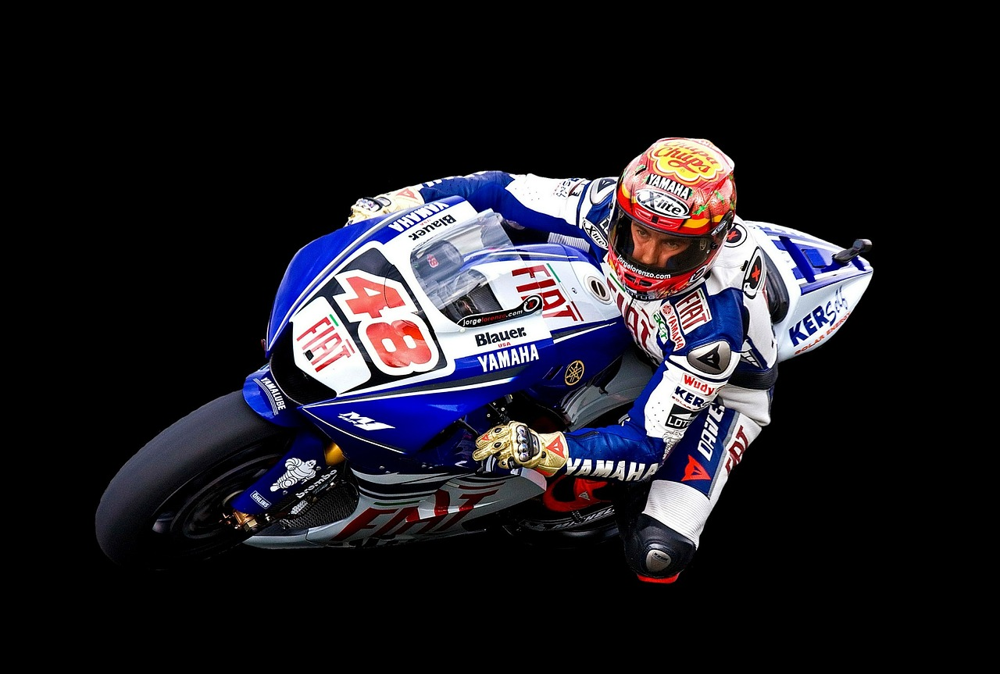

La Kawasaki Z1000 es una motocicleta naked de alta cilindrada que destaca por su diseño agresivo "Sugomi" y su
potente motor de cuatro cilindros en línea de 1.043 cc, ofreciendo una aceleración contundente y un rendimiento
emocionante en todo el rango de revoluciones; su chasis de aluminio ligero y suspensión ajustable proporcionan
agilidad y estabilidad, mientras que los frenos de alto rendimiento garantizan una frenada precisa y potente,
con versiones que incluyen tecnología como ABS y modos de conducción, todo ello diseñado para una experiencia de
conducción intensa y deportiva.

Los corredores de MotoGP son atletas de élite que combinan una excepcional habilidad técnica con una rigurosa
preparación física y mental, dedicados por completo al motociclismo y con una profunda pasión por la competición;
dominan motocicletas que alcanzan velocidades extremas, requieren reflejos rápidos y una capacidad de toma de
decisiones instantánea, y trabajan estrechamente con sus equipos técnicos para optimizar el rendimiento de sus
máquinas, buscando la excelencia en cada carrera y comprendiendo la importancia de la tecnología y el análisis de
datos para alcanzar la victoria.

Las rutas en un circuito de MotoGP combinan una mezcla exigente de rectas de alta velocidad, curvas cerradas y
cambios de dirección rápidos, diseñadas para poner a prueba la habilidad y el valor de los pilotos, así como
el rendimiento de las motocicletas; las rectas permiten alcanzar velocidades máximas, mientras que las curvas
varían en radio y dificultad, exigiendo frenadas precisas y una inclinación extrema para mantener la
velocidad, y los cambios de dirección rápidos requieren agilidad y control para encadenar curvas y mantener el
impulso, todo ello en un entorno donde la precisión y la concentración son cruciales para lograr tiempos de
vuelta competitivos.